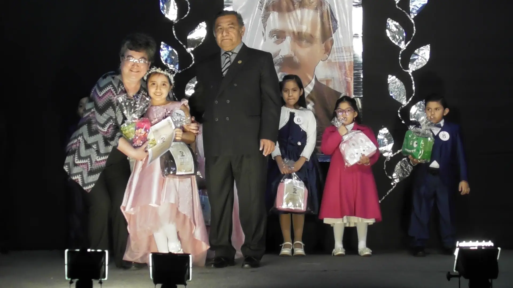
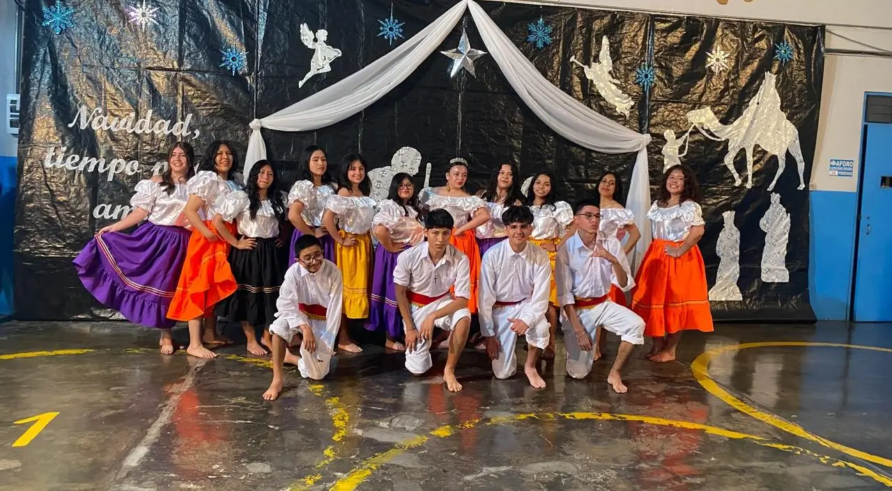
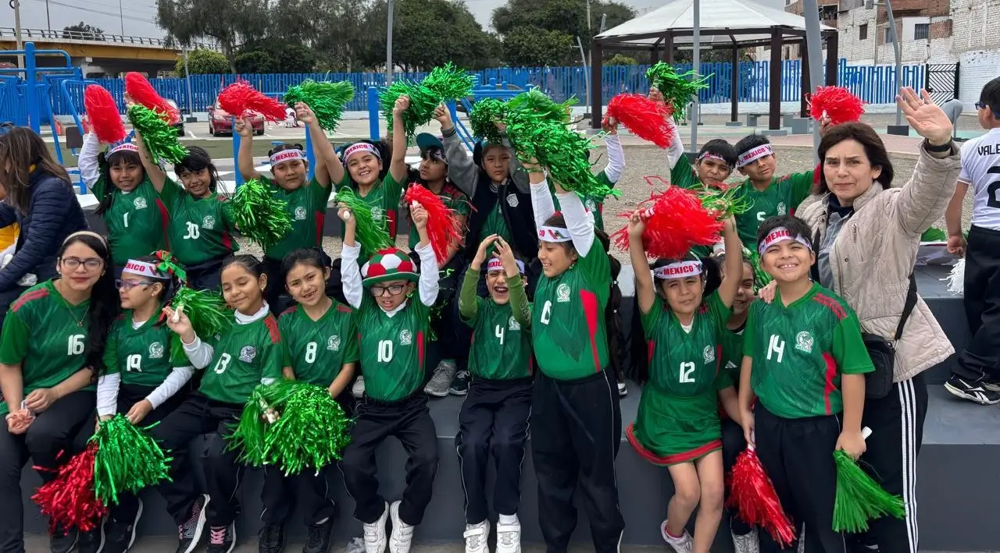

Somos la I.E.P. «San Antonio Abad», fundada en 1998. Nos dedicamos a formar personas integrales y competentes, preparadas para enfrentar los retos de la vida desde una perspectiva ética y cristiana. Ofrecemos una educación de calidad, centrada en valores, conocimientos y habilidades que inspirarán a nuestros estudiantes a transformar positivamente su entorno.
Con más de 15 años de trayectoria en San Miguel, el Colegio “San Antonio Abad” ha sido testigo del crecimiento de generaciones de estudiantes que hoy forman parte de nuestra historia. Cada logro, cada aprendizaje y cada experiencia compartida han fortalecido una comunidad educativa basada en el respeto, la unión y los valores. Celebraciones como el Día de la Madre, nuestras olimpiadas y las ferias escolares no solo son eventos, sino momentos que dejan huella y refuerzan el sentido de familia que nos caracteriza.

Promovemos una sociedad en la que la persona humana sea respetada y valorada. Aspiramos a una sociedad democrática que fomente el bien común y el desarrollo integral de cada uno de sus miembros. Asimismo, buscamos una comunidad en constante evolución, donde cada persona tenga la oportunidad de poner sus cualidades y potencialidades al servicio de los demás, en un entorno caracterizado por la paz, la solidaridad y el permanente progreso y superación.
En el Colegio “San Antonio Abad”, concebimos la educación como un proceso que permite el desarrollo de las virtualidades de los seres humanos, formándose estos de manera individual y colectiva; es decir, como parte de una comunidad. Este proceso se inicia cuando el infante se abre a la conciencia del mundo que lo rodea, llega a su plenitud en el momento en que el ser humano alcanza la madurez y asume la responsabilidad de su propia existencia y concluye hacia el fin de la misma.
Da un vistazo a las secciones de galería y eventos para aprender más sobre nuestra institución

